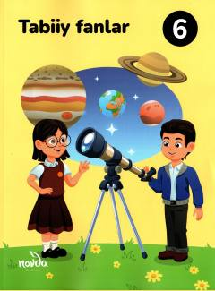

6T6-sinf o'quvchilari uchun tabiiy fanlar bo'yicha amaliy darslik.
Ushbu darslik umumiy o'rta ta'lim maktablarining 6-sinf o'quvchilari uchun mo'ljallangan bo'lib, tabiiy fanlar asoslarini o'rgatadi. Kitobda atrofimizdagi olamda sodir bo'layotgan hodisalar, biologik, kimyoviy va fizik jarayonlar haqida qiziqarli ma'lumotlar keltirilgan. Shuningdek, u o'quvchilarda ilmiy fikrlash va tadqiqotchilik ko'nikmalarini shakllantirishga xizmat qiladi.